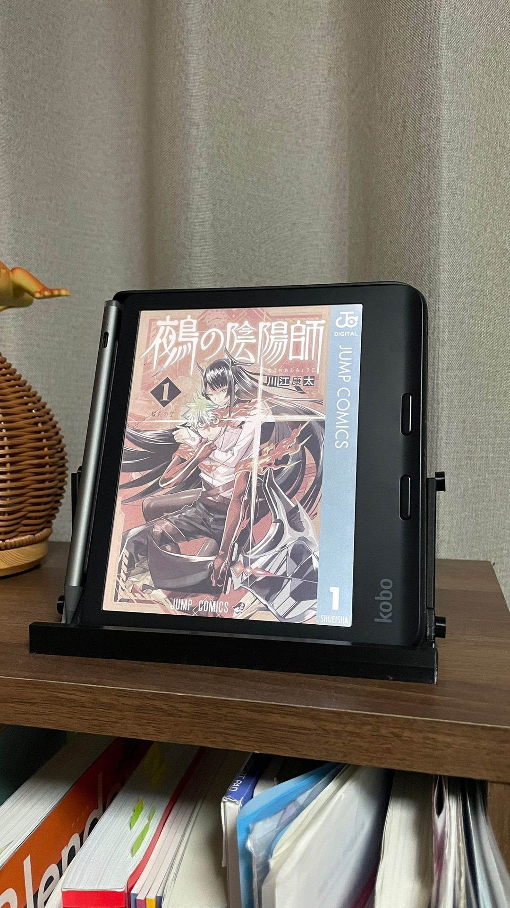
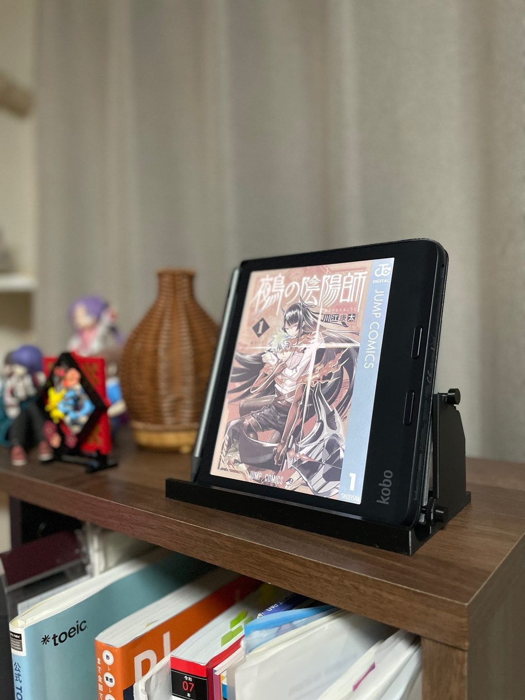
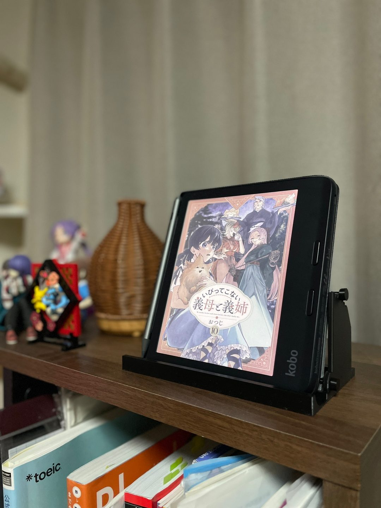

電子書籍は便利なのですが、紙の本のように棚に並べて表紙を眺める、という楽しみがありません。電子書籍リーダーの「Kobo Libra Colour」を買ったので、買った本の表紙を部屋に「飾る」仕組みを作ってみました。所持している本の表紙を全画面で表示し、時間が経つと別の本に切り替わる、というものです。

経緯：電子書籍の表紙は飾れない
紙の本は、読み終わっても本棚に並べておけます。背表紙や表紙が目に入るだけでも「この本を持っている」という感じがします。一方で電子書籍は、端末の中に閉じていて、ライブラリの画面を開かない限り表紙を見ることもありません。
Koboの画面は電子ペーパーで、スリープ中も表示がそのまま残ります（絵を表示し続けるのに電力を使わないのが電子ペーパーの特徴です）。実際、Koboはスリープ画面に読んでいる本の表紙を表示する機能を持っています。最初は「これで飾れる」と思ったのですが、実際に置いてみると、スリープ中はフロントライトが消えているため、室内では画面が思ったより暗く、飾っている感じがしませんでした。
そこで方針を変えて、表示中は端末を起こしたままフロントライトを点け、スタンドに立てて飾ることにしました。
作ったもの
ひとつは、端末を立てたまま固定できるスタンドです。立てた状態でも側面からUSBケーブルを挿せるようにしています（理由は後述します）。
もうひとつは表示側の仕組みです。純正のアプリと共存できるオープンソースのリーダーアプリ「KOReader」を導入し、その上で動く表示用のプラグインを用意しました。やっていることはシンプルで、所持している本の表紙を全画面で表示し、5分ごとにランダムな順番で切り替える、というものです。KOReaderを開けば自動で表示が始まるようにもしました。
表紙の取り込みも自動化しています。本を端末で一度開くと、端末の中に高解像度の表紙データが作られるので、それをプラグインが拾って表示リストに追加します。新しく買った本も、一度開けば自動でローテーションに加わります。
時間が経つと、別の本に切り替わります
同じ場所・同じ画角で撮った2枚です。時間が経つと、表示される表紙が別の本に変わっています。


使ってみた感じ
棚の一角が、小さなポスターを差し替えているような場所になりました。カラー電子ペーパーなので発色は落ち着いた感じですが、その分、紙の表紙に近い質感で部屋に馴染みます。今は8冊分がローテーションしていて、ふと目をやると前に見たときと違う表紙になっているのが楽しいです。「飾る」目的は達成できたと思っています。
気になるところ：電池持ち
正直なところ、一番気になっているのは電池持ちです。電子書籍リーダーは「電池が数週間持つ」のが売りですが、それは画面の書き換え時だけ電力を使う前提の話です。今回はフロントライトを点けたまま、端末も起こしっぱなしなので、消費電力はかなり増えているはずです。
いまの運用は、スタンドに立てたままUSBで給電しています。ただ、給電しっぱなしが電池自体にどう影響するかは分からないので、ここは様子見です。電池の減り方も含めて、しばらく使いながら確認していこうと思っています。
| 対象端末 | Kobo Libra Colour |
|---|---|
| 仕組み | KOReader＋表示用プラグイン、固定スタンド |
| 切り替え | 5分ごと・ランダム |